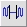
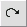

Audacity-opas
Työkalupalkki
Ohjelman nimi: Audacity
Ohjelman versio: 1.2.6
Työkalupalkkien avulla voit käyttää työkaluja suoraan raitoihin. Audacityssä on kolme keskeistä työkalupalkkia:
- Päätyökalupalkki
- Miksaustyökalupalkki
- Editointityökalupalkki
Päätyökalupalkki
Katsotaanpa jokaista nappulaa:
| Nappula | Toiminto |
| Tämä on tärkein työkalu äänen valintaan. | |
| Kuorityökalu määrittelee kuinka raidat voimistuvat ja hiljenevät. | |
| Tällä työkalulla siirretään raitoja aikajanalla suhteessa toisiinsa. | |
| Tämä työkalu tarkentaa lähemmäs tai kauemmas äänen tietystä osasta. | |
| Käyttäjä voi piirtää suoraan aaltomuotoja. | |
| Asettaa kursorin projektin alkuun. | |
| Soittonappula soittaa projektin äänet. | |
| Äänitysnappula äänittää uuden raidan tietokoneen äänisisääntulolaitteesta. | |
 |
Taukonappula pitää taukoa nauhoituksen tai soiton aikana. Uusi painallus jatkaa nauhoitusta tai soittoa. |
| Pysäytysnappula tai välilyönti lopettaa äänen toistamisen heti. | |
| Siirtää kursorin projektin loppuun. |
Miksaustyökalupalkki
Nämä liukusäätimet hallitsevat äänikortin mikserin asetuksia. Oikealla oleva valitsin määrittää ohjelman käyttämän äänen sisääntulon.
Sisääntulon valitsin
Valitsee nauhoituksen sisääntulon lähteen. Kaikki sisääntulot riippuvat äänikortista, joten vaihtoehdot ovat erilaisia riippuen koneen äänikortista.
Ulostulon liukuvalitsin
Vasemmalla oleva liukusäädin hallitsee äänikortin ulostulon voimakkuutta. Itse asiassa se hallitsee äänikortin ajurin ulostulon asetuksia.
Sisääntulon liukusäädin
Oikealla oleva liukusäädin mahdollistaa valitun sisääntulon voimakkuuden hallitsemisen. Se kontrolloi itse asiassa äänikortin ajurin nauhoitustasoa.
Editointityökalupalkki
Kaikki nämä työkalut toteuttavat täsmälleen saman funktion kuin editointivalikosta tai näyttövalikosta valitut työkalut. Katsotaanpa nappuloita yksi kerrallaan:
| Nappula | Toiminto |
| Poistaa valitun äänidatan ja siirtää sen käyttöjärjestelmän leikepöydälle. | |
| Kopioi valitun äänidatan leikepöydälle poistamatta sitä projektista. | |
| Sijoittaa leikepöydällä olevan äänidatan projektin valintakursorin kohdalle. | |
| Tuhoaa kaiken paitsi valitun äänen. | |
|  | Korvaa valitun äänen hiljaisuudella. |
| Tämä kumoaa viimeisen tehdyn editoinnin. | |
|  | Tämä tekee uudelleen juuri kumotun editoinnin. |
| Tarkentaa lähemmäs äänen vaaka-akselia, jolloin ääntä näkyy lyhyemmältä ajalta. | |
| Tarkentaa kauemmas näyttäen ääntä pidemmältä ajalta. | |
| Tarkentaa lähemmäs, kunnes valittu ääninäyte täyttää näytön, jolloin valittu ääninäyte näkyy tarkemmin. | |
| Näyttää koko projektin. |